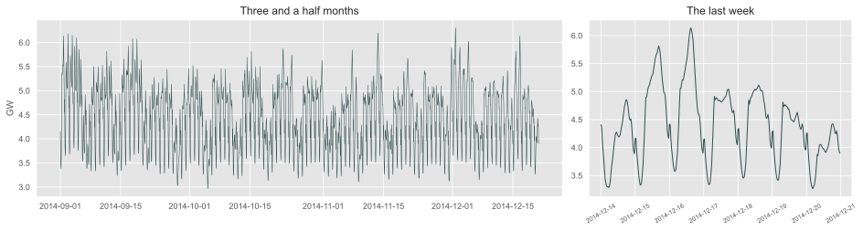
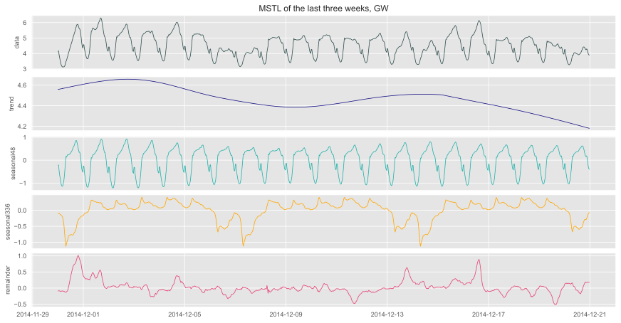
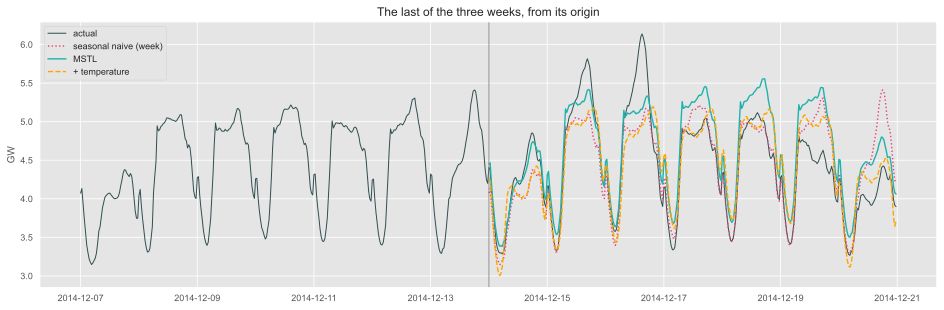
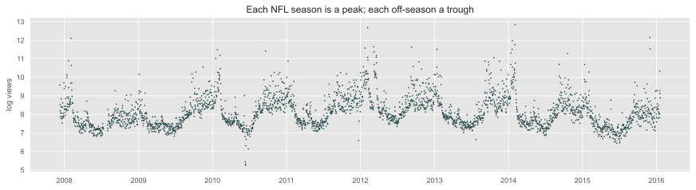
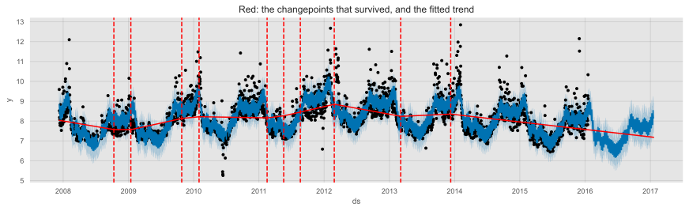
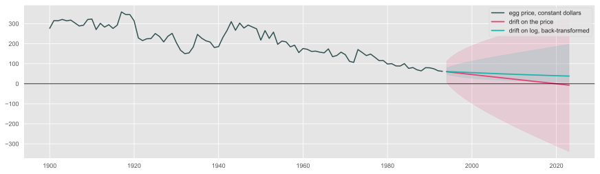
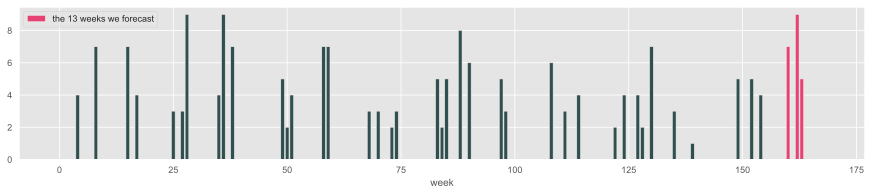
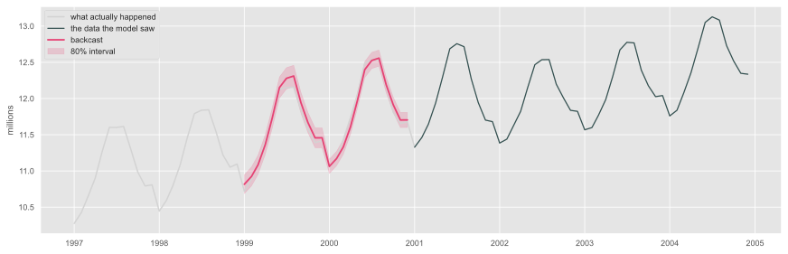

fig, axes = plt.subplots(1, 2, figsize=(13, 3.4), width_ratios=[2, 1])axes[0].plot(elec["ds"], y_el, color=slate, linewidth=0.5)axes[0].set_ylabel("GW")axes[0].set_title("Three and a half months")week = elec["ds"] >= elec["ds"].iloc[-336]axes[1].plot(elec.loc[week, "ds"], y_el[week], color=slate, linewidth=1)axes[1].set_title("The last week")axes[1].tick_params(axis="x", labelsize=7, rotation=30)plt.show()

Two seasons visible at once: a daily cycle of 48 half-hours and a weekly cycle of \(48 \times 7 = 336\). A third, annual, is there too, but four months of data cannot estimate it.
Why the models so far cannot do this
ETS has one seasonal period, and a seasonal state per position: 336 weekly states to estimate, updating one at a time once a week.
Seasonal ARIMA with \(m = 336\): a seasonal difference at lag 336 and seasonal terms that multiply out to polynomials of degree over a thousand. It fits, slowly, and estimates the weekly pattern from a handful of weeks.
And neither can hold two seasonal periods at once.
Two ways out, both built from pieces you already have:
Approach
Built from
Week
MSTL — decompose into several seasonal components, forecast each simply
STL
2
Dynamic harmonic regression — Fourier terms for each period, ARIMA errors
Fourier terms + dynamic regression
5, 7
MSTL: STL with several seasons
\[
y_t = T_t + S^{(48)}_t + S^{(336)}_t + R_t
\]
STL applied repeatedly, one seasonal period at a time, from the shortest to the longest.
last =slice(len(components) -3*336, None)fig, axes = plt.subplots(5, 1, figsize=(12, 6.2), sharex=True)for ax, col, colour inzip(axes, ["data", "trend", "seasonal48", "seasonal336", "remainder"], [slate, blue, turquoise, orange, red_pink]): ax.plot(elec["ds"].iloc[last], components[col].iloc[last], color=colour, linewidth=0.8) ax.set_ylabel(col, fontsize=9)axes[0].set_title("MSTL of the last three weeks, GW")plt.show()

The daily shape is the largest component; the weekly one is mostly the weekend dip; the remainder is what neither season explains — weather, above all.
MSTL as a forecaster
The forecast is built the way Week 4’s decomposition forecast was:
each seasonal component is carried forward from its last cycle;
the seasonally adjusted series — trend plus remainder — is forecast by a non-seasonal model: by default AutoETS(model="ZZN");
It is one line in statsforecast, and it is the same idea as Lab 4 — STL plus a simple method for the level — generalised to more than one season.
Dynamic harmonic regression
Week 5’s Fourier terms, now for each seasonal period, and Week 7’s ARIMA errors:
\[
y_t = \beta_0 + \sum_{k=1}^{K_1}\left[\alpha_k \sin\tfrac{2\pi k t}{48} + \gamma_k \cos\tfrac{2\pi k t}{48}\right]
+ \sum_{k=1}^{K_2}\left[\delta_k \sin\tfrac{2\pi k t}{336} + \lambda_k \cos\tfrac{2\pi k t}{336}\right] + \eta_t
\]
t = np.arange(len(y_el) +336)def fourier(K, m):return np.column_stack([f(2* np.pi * k * t / m) for k inrange(1, K +1) for f in (np.sin, np.cos)])X_season = np.column_stack([fourier(10, 48), fourier(5, 336)]) # K = 10 daily, K = 5 weeklyX_weather = np.column_stack([X_season, np.r_[temp, temp[-336:]], np.r_[temp, temp[-336:]] **2])print("regressors:", X_season.shape[1], "seasonal,", X_weather.shape[1] - X_season.shape[1], "for temperature")
regressors: 30 seasonal, 2 for temperature
The seasons live in the Fourier terms, so the error stays non-seasonal and undifferenced: AutoARIMA(season_length=1, d=0).
\(K\) is chosen, not searched — AICc over-fits long periods (FPP §12.1). Temperature enters as in Week 7, ex-post.
Three weeks ahead, scored
H =336scale_el =float(np.mean(np.abs(y_el[336:] - y_el[:-336])))ends = [len(y_el) - k * H for k in (3, 2, 1)] # three weeksdhr = partial(AutoARIMA, season_length=1, d=0, max_p=3, max_q=3)def score(forecaster):return [float(np.mean(np.abs(y_el[e:e + H] - forecaster(e)))/ scale_el) for e in ends]def mstl_fc(e): model = MSTL(season_length=[48, 336]).fit(y=y_el[:e])return model.predict(h=H)["mean"]def dhr_fc(e, X): model = dhr().fit(y=y_el[:e], X=X[:e])return model.predict(h=H, X=X[e:e + H])["mean"]elec_scores = pd.DataFrame({"seasonal naive (week)": score(lambda e: y_el[e -336:e -336+ H]),"MSTL": score(mstl_fc),"harmonic regression": score(lambda e: dhr_fc(e, X_season)),"+ temperature": score(lambda e: dhr_fc(e, X_weather)),}, index=[f"from {elec['ds'].iloc[e]:%m-%d}"for e in ends]).Telec_scores["mean"] = elec_scores.mean(axis=1)elec_scores.round(3)
from 11-30
from 12-07
from 12-14
mean
seasonal naive (week)
1.408
1.524
1.002
1.311
MSTL
1.503
0.735
1.220
1.153
harmonic regression
1.538
0.830
1.108
1.159
+ temperature
1.516
0.804
1.092
1.137
Three weeks ahead, drawn
Code
e = ends[-1]window = elec["ds"].iloc[e:e + H]lines = {"seasonal naive (week)": (y_el[e -336:e -336+ H], red_pink, ":"),"MSTL": (mstl_fc(e), turquoise, "-"),"+ temperature": (dhr_fc(e, X_weather), orange, "--"),}fig, ax = plt.subplots(figsize=(13, 4.2))ax.plot(elec["ds"].iloc[e -336:e + H], y_el[e -336:e + H], color=slate, linewidth=1, label="actual")for name, (fc, colour, style) in lines.items(): ax.plot(window, fc, style, color=colour, linewidth=1.4, label=name)ax.axvline(elec["ds"].iloc[e], color="grey", linewidth=0.8)ax.set_ylabel("GW")ax.legend(loc="upper left")ax.set_title("The last of the three weeks, from its origin")plt.show()

Complex seasonality: what to take away
On average all three models beat the seasonal naive week, and temperature helps a little. But look at the columns: seasonal naive wins two of the three weeks. The average is carried by the one week where copying last week failed badly. Three windows are close to noise — the honest summary is “comparable, with MSTL the cheapest”.
MSTL is the first thing to try: one line, seconds to fit, and it reuses decomposition logic you know. Harmonic regression is the flexible one — any number of seasons, any predictors — but slower, and \(K\) is a judgement call. (AutoTBATS, the third standard option, took 19 minutes on the same three weeks and scored worst, 1.98.)
Neither knows about holidays: the week of Christmas, which these three weeks stop just short of, breaks every model here. That is a regressor problem, not a seasonality problem.
Your Track B series are monthly or quarterly: one season. MSTL still applies with one period — and is one of the candidates that the next section combines.
Prophet
What Prophet is
Prophet is an open-source forecasting library released by Facebook (Meta) in 2017 — “forecasting at scale” (Taylor & Letham, 2017).
Built for analysts with domain knowledge but not necessarily time series training, who need many forecasts of business series with strong seasonality and several seasons of history.
Analyst in the loop: the model is automatic — robust to missing data, outliers and trend shifts — but every component has a handle you can turn by hand: changepoints, capacities, holidays, seasonal flexibility.
It is the most widely installed “advanced” forecasting library. That is a reason to know what it does — and to score it before you trust it.
The model
\[
y(t) = g(t) + s(t) + h(t) + \varepsilon_t
\]
Term
What it is
You have met it as
\(g(t)\)
a piecewise trend with changepoints
Week 5’s piecewise linear trend
\(s(t)\)
Fourier terms for each seasonal period
Week 5’s Fourier terms
\(h(t)\)
holiday indicators from a calendar
Week 5’s dummy variables
\(\varepsilon_t\)
the error — assumed independent
what Week 7 said not to assume
Important
Prophet treats forecasting as curve fitting, not as temporal dependence. It does not need regularly spaced data or interpolated gaps, and it fits fast — but \(y_{t-1}\) never enters the forecast of \(y_t\). There is no ARIMA error and no ETS state: short-run dynamics stay in the residuals.
The classic example: Peyton Manning
Log daily page views of the Wikipedia article on Peyton Manning, 2007–2016 — the example from Prophet’s own documentation.
peyton = pd.read_csv('../data/peyton_manning.csv', parse_dates=["ds"])print(f"{len(peyton)} days, {peyton['ds'].min():%Y-%m-%d} to {peyton['ds'].max():%Y-%m-%d}")
2905 days, 2007-12-10 to 2016-01-20
Code
fig, ax = plt.subplots(figsize=(12, 3.2))ax.plot(peyton["ds"], peyton["y"], ".", color=slate, markersize=1.5)ax.set_ylabel("log views")ax.set_title("Each NFL season is a peak; each off-season a trough")plt.show()

Four calls
The interface follows scikit-learn: build, fit, extend the dates, predict.
m = Prophet()m.fit(peyton)future = m.make_future_dataframe(periods=365) # one year past the dataforecast = m.predict(future)forecast[["ds", "yhat", "yhat_lower", "yhat_upper"]].tail(3)
\(k\) — the growth rate of the first segment; \(m\) — its offset.
\(s_1, \dots, s_S\) — changepoints, and \(a_j(t) = 1\) once \(t \ge s_j\), 0 before.
\(\delta_j\) — the change in slope at changepoint \(j\). The slope after the last changepoint is \(k + \sum_j \delta_j\).
\(\gamma_j = -s_j\delta_j\) — not a free parameter: it shifts the offset so the segments join at each changepoint instead of jumping.
This is Week 5’s piecewise trend, \(\max(0, t - \tau)\), with many knots instead of one — and with a way to choose which knots matter.
Choosing the changepoints
Candidates. 25 potential changepoints, spread evenly over the first 80% of the history.
A sparse prior. Each slope change gets a Laplace prior, \(\delta_j \sim \text{Laplace}(0, \tau)\) — the Bayesian version of a lasso penalty. Most \(\delta_j\) end up at or near zero; only real changes in slope survive.
Code
fig = m.plot(forecast, figsize=(12, 3.6))add_changepoints_to_plot(fig.gca(), m, forecast)plt.title("Red: the changepoints that survived, and the fitted trend")plt.show()

How flexible should the trend be?
\(\tau\) is changepoint_prior_scale: large lets the trend bend at every bump, small keeps it nearly straight.
The flexible trend follows the last decline and extrapolates it; the stiff one barely moves. Same data, very different forecasts a year out — \(\tau\) is a forecasting decision, not a fitting detail.
Forecast uncertainty from the trend
Past the data there are no changepoints to fit — but the future will have them too.
Prophet simulates them: it estimates how often and how much the slope changed in the past, draws future changepoints at that rate and size, and propagates many trend paths.
The interval is the spread of those paths plus the residual noise. So a flexible trend in the past gives a wide interval in the future, which is honest: more past changes, less certainty.
What the interval does not include: any autocorrelation of the errors. That is where Prophet’s intervals are most often too narrow.
Saturating growth
When growth has a ceiling — a market, a population, a capacity — Prophet can replace the line by a logistic curve:
\(C(t)\) — the carrying capacity, which you supply as a column cap (it may change over time).
Prophet(growth="logistic") — and the same changepoints, now changing the growth rate of the curve.
Like the scaled logit later in this lecture: the bound is an assumption you write down, and the forecast leans on it.
The seasonality \(s(t)\)
\[
s(t) = \sum_{n=1}^{N}\left[a_n \cos\left(\frac{2\pi n t}{P}\right) + b_n \sin\left(\frac{2\pi n t}{P}\right)\right]
\]
Exactly Week 5’s Fourier terms: \(P\) is the period in days, \(N\) the number of harmonics. Defaults: yearly (\(P = 365.25\), \(N = 10\)), weekly (\(P = 7\), \(N = 3\)), daily for sub-daily data. Others are added by hand:
m = Prophet(weekly_seasonality=False)m.add_seasonality(name="monthly", period=30.5, fourier_order=5)
Trend, weekly, yearly — each a function you can read: views peak on Mondays after Sunday games, and in January around the play-offs.
Holidays and events \(h(t)\)
A holiday is a dummy variable — with a window of days before and after it, because the effect of Christmas starts before the 25th. Built-in country calendars, or your own table of events (games, launches, promotions).
For Peyton Manning the effect that matters is the Super Bowl, which is not a public holiday. Prophet’s documentation adds playoff and Super Bowl dates as a custom events table — the analyst in the loop.
Prophet’s own cross-validation
Prophet ships a rolling-origin evaluation: initial days of training, a new origin every period, horizon days ahead — the same idea as Week 3.
coverage is the share of actual values inside the 80% interval, by horizon. It sits mostly below 0.80 — the too-narrow intervals the previous slides predicted for a model without error dynamics.
Prophet against the models of this course
Two series from this course, scored on the same rolling origins as their earlier comparisons:
Code
production = pd.read_csv('../data/aus_production.csv', parse_dates=["ds"])cement = (production.query("ds.dt.year >= 1988") [["ds", "Cement"]].dropna() .rename(columns={"Cement": "y"}) .reset_index(drop=True))y_cem, H_CEM = cement["y"].to_numpy(float), 8scale_cem =float(np.mean(np.abs(y_cem[4:] - y_cem[:-4])))cem_ends = [len(y_cem) - H_CEM -4* kfor k inrange(5, -1, -1)] # six originsdef cem_score(fc):return np.mean([np.mean(np.abs(y_cem[e:e + H_CEM] - fc(e)))/ scale_cem for e in cem_ends])def prophet_cem(e): model = Prophet(weekly_seasonality=False, daily_seasonality=False) model.fit(cement.iloc[:e]) future = cement.iloc[e:e + H_CEM][["ds"]]return model.predict(future)["yhat"].to_numpy()def stats_cem(model):returnlambda e: model.fit(y=y_cem[:e]).predict(h=H_CEM)["mean"]
The three weeks from the complex seasonality section, with Prophet added — daily and weekly seasonality are switched on automatically for sub-daily data:
Is: a convenient regression — piecewise trend, Fourier seasons, holiday windows — with good defaults, a readable decomposition, and fast fits. On Peyton Manning, its home ground, it does what it was built for.
Is not: a better forecaster by default. On cement it loses to ETS, ARIMA and seasonal naive; on half-hourly electricity it loses to MSTL and to harmonic regression, and only temperature brings it near seasonal naive.
Why: no error dynamics. Everything Weeks 6 and 7 built — using the last few errors — is missing, and short horizons are where that costs most.
Treat Prophet as one more candidate to score on a rolling origin — never as the default.
Weekly data
The trouble with \(m = 52\)
A year has \(365.25 / 7 \approx\)52.18 weeks. Every method that needs an integer seasonal period is approximately wrong from the start, and drifts by a day and a quarter per year.
ETS and seasonal ARIMA: \(m = 52\) is long, and must be an integer.
MSTL with season_length=52: integer too, but the season is estimated by smoothing, not state by state.
Harmonic regression: Fourier terms take any period, \(P = 52.18\) — the one method here for which the non-integer year is no problem.
The example: Victoria’s electricity demand again, summed to weekly totals, 2012–2014.
weekly = (vic.query("unique_id == 'Demand'").set_index("ds")["y"] .resample("W-SUN").sum().iloc[1:-1] /1e6/2) # full weeks only, TWhy_wk = weekly.to_numpy(float)print(f"{len(y_wk)} weeks, {weekly.index.min():%Y-%m-%d} to {weekly.index.max():%Y-%m-%d}")
156 weeks, 2012-01-08 to 2014-12-28
Weekly electricity: three approaches
H_WK =26# half a year aheadtrain_wk, test_wk = y_wk[:-H_WK], y_wk[-H_WK:]scale_wk =float(np.mean(np.abs(y_wk[52:] - y_wk[:-52])))t_wk = np.arange(len(y_wk))def fourier_52(K): waves = [f(2* np.pi * k * t_wk /52.18) # P = 52.18for k inrange(1, K +1) for f in (np.sin, np.cos)]return np.column_stack(waves)mstl_wk = MSTL(season_length=52).fit(y=train_wk)weekly_fc = {"seasonal naive (m=52)": train_wk[-52:-52+ H_WK],"MSTL (m=52)": mstl_wk.predict(h=H_WK)["mean"]}for K in (2, 4, 6): X = fourier_52(K) fit = AutoARIMA(season_length=1).fit(y=train_wk, X=X[:-H_WK]) weekly_fc[f"harmonic, K={K}"] = fit.predict(h=H_WK, X=X[-H_WK:])["mean"]pd.Series({k: np.mean(np.abs(test_wk - f)) / scale_wkfor k, f in weekly_fc.items()}, name="MASE").round(3)
With two years of training data, last year’s week is hard to beat: seasonal naive wins. Every other method has to estimate the yearly shape from two cycles.
Harmonic regression comes close with a handful of terms; MSTL, which smooths the season over only two cycles, does worst.
The FPP rule of thumb: harmonic regression when the season is stable or you need covariates; STL/MSTL when the season changes over time and there are enough years to see it change.
Combining forecasts
Why combine at all
“The combination of forecasts often leads to better forecast accuracy” — Bates & Granger (1969), confirmed in every large forecasting competition since: M3, M4, M5.
Different models make different mistakes. Averaging cancels part of them.
Choosing one model on a validation window is itself a noisy decision — Week 6 showed a ranking that flipped between windows.
The simplest combination is the best-documented: the plain average. Estimated weights rarely beat it, because estimating weights is another noisy decision.
On all three series ARIMA alone is best, and both combinations land between the models they average.
That is not a failure of combining. If you knew ARIMA would win, you would use it. The question is what happens when you do not know — which is every time you forecast something new.
A combination’s forecast error is never larger than the larger error of its parts. Selection can be.
One series cannot answer “select or combine”. You need many — and you have 140.
Select or combine: 140 series
On every issued Track B series: either select between AutoETS and AutoARIMA on three windows of the served history (the Lab 5 and Lab 6 way), or average them. Both scored on the hidden horizon against each series’ benchmark.
Strategy
Beats the benchmark
Median skill
Mean skill
Worst skill
AutoETS alone
100%
0.835
0.840
0.999
AutoARIMA alone
100%
0.809
0.816
0.999
select the better on validation
100%
0.815
0.826
0.995
average ETS and ARIMA
100%
0.805
0.793
0.933
Select or combine: what the table says
Selection picks the model that turns out better on the hidden horizon on 54% of series — barely better than a coin. Three validation windows do not say much about the next one.
The average beats selection on 65% of series, has the better mean, and a much better worst case: 0.93 against 0.995, where selection came within half a percent of losing a point.
If you could always pick the better model, the median would be 0.787. Nobody can; the average gets most of the way there without trying.
Combining other models
The same pool, more members:
Forecast
Beats the benchmark
Median skill
AutoETS
100%
0.835
AutoARIMA
100%
0.809
ETS + ARIMA
100%
0.805
ETS + ARIMA + Theta
92%
0.796
MSTL alone
80%
0.812
AutoCES alone
79%
0.840
AutoTheta alone
67%
0.855
Adding Theta lowers the median a little and raises the risk: it is the weakest member, and it drags the bad cases down with it.
A combination is as good as the worst member it cannot outvote. Combine models that are each defensible on their own.
A combination, built step by step
US leisure employment once more, with a fixed three-way split: train to September 2014, a validation window from October 2014 to September 2016, and a test window of the last 36 months. Three different model families:
leisure = (employment.query("unique_id == 'Leisure and Hospitality' and ds.dt.year >= 2001") .reset_index(drop=True))y_lei = leisure["y"].to_numpy(float) /1000# millions of peopleN_TEST, N_VAL =36, 24train_lei, valid_lei, test_lei = y_lei[:-(N_TEST + N_VAL)], y_lei[-(N_TEST + N_VAL):-N_TEST], y_lei[-N_TEST:]members = {"ETS": lambda: AutoETS(season_length=12),"ARIMA": lambda: AutoARIMA(season_length=12),"MSTL": lambda: MSTL(season_length=12)}# the members, refitted on train + validation, forecasting the test windowtest_fc = {name: make().fit(y=np.r_[train_lei, valid_lei]).predict(h=N_TEST, level=[80])for name, make in members.items()}combination = np.mean([fc["mean"] for fc in test_fc.values()], axis=0)print({name: round(float(np.mean(np.abs(test_lei - fc["mean"]))), 3) for name, fc in test_fc.items()},"| combination:", round(float(np.mean(np.abs(test_lei - combination))), 3), "(MAE, millions)")
# 1. Average the members' own 80% bounds.avg_lo = np.mean([fc["lo-80"] for fc in test_fc.values()], axis=0)avg_hi = np.mean([fc["hi-80"] for fc in test_fc.values()], axis=0)# 2. Conformal: errors of the combination on the validation window, added to the new forecast.valid_fc = np.mean([make().fit(y=train_lei).predict(h=N_VAL)["mean"] for make in members.values()], axis=0)valid_errors = valid_lei - valid_fcconf_lo = combination + np.quantile(valid_errors, 0.10)conf_hi = combination + np.quantile(valid_errors, 0.90)print(f"validation errors of the combination: mean {valid_errors.mean():+.3f}, "f"10% quantile {np.quantile(valid_errors, 0.1):+.3f}, 90% quantile {np.quantile(valid_errors, 0.9):+.3f}")
validation errors of the combination: mean +0.344, 10% quantile +0.088, 90% quantile +0.640
The conformal recipe needs no model: whatever the combination’s errors were on held-out data, assume the next ones look the same. That assumption is the whole method — and the next slide tests it.
Scoring intervals: the Winkler score
An interval can fail two ways: too wide to be useful, or too narrow to contain the truth. The Winkler score charges for both — the width, plus a penalty for every miss. Lower is better.
The combination’s point forecast is as accurate as the best member, without knowing in advance which member that would be.
The conformal interval sits above the forecast — it does not even contain it. The validation window was one where the members under-forecast, and the method copied that bias into the future.
The averaged bounds cover every month and have the best Winkler score of all five. Neither recipe is right in general: a conformal interval needs errors from many windows, not one.
Forecasts within limits
Egg prices, thirty years ahead
eggs = pd.read_csv('../data/egg_prices.csv', parse_dates=["ds"])y_egg = eggs["y"].to_numpy(float)h_egg =30raw = RandomWalkWithDrift().fit(y=y_egg).predict(h=h_egg, level=[95])logged = {k: np.exp(v) for k, v in RandomWalkWithDrift().fit(y=np.log(y_egg)).predict(h=h_egg, level=[95]).items()}print(f"raw drift: forecast in 30 years {raw['mean'][-1]:6.1f} lower 95% bound {raw['lo-95'][-1]:7.1f}")print(f"log drift: forecast in 30 years {logged['mean'][-1]:6.1f} lower 95% bound {logged['lo-95'][-1]:7.1f}")print(f"raw drift's lower bound is negative from step {int(np.argmax(raw['lo-95'] <0)) +1}")
raw drift: forecast in 30 years -6.9 lower 95% bound -338.7
log drift: forecast in 30 years 38.5 lower 95% bound 7.5
raw drift's lower bound is negative from step 2
Code
future = pd.date_range(eggs["ds"].iloc[-1], periods=h_egg +1, freq="YS")[1:]fig, ax = plt.subplots(figsize=(12, 3.4))ax.plot(eggs["ds"], y_egg, color=slate, label="egg price, constant dollars")for fc, colour, name in [(raw, red_pink, "drift on the price"), (logged, turquoise, "drift on log, back-transformed")]: ax.plot(future, fc["mean"], color=colour, linewidth=1.8, label=name) ax.fill_between(future, fc["lo-95"], fc["hi-95"], color=colour, alpha=0.15)ax.axhline(0, color="black", linewidth=0.8)ax.legend(loc="upper right")plt.show()

Logs keep forecasts positive
A drift on the price extrapolates a straight line down, and it crosses zero. A drift on the log extrapolates a constant rate of decline, which never reaches zero — and its interval is asymmetric, as a price’s should be.
Back-transforming gives the median, not the mean.\(\exp(\widehat{\log y})\) is the middle of the forecast distribution; the mean is higher. For a forecast scored on squared error, that matters — FPP §5.6 gives the bias adjustment.
The same trick works for ETS and ARIMA: fit on \(\log y\), exponentiate the forecast and the bounds. Lab 6’s template did exactly that.
Between two limits: the scaled logit
When a quantity is bounded on both sides — a share in \([0, 1]\), a price that has a floor and a ceiling — transform with
\[
z = \log\frac{y - a}{b - y}, \qquad y = \frac{(b - a)\,e^{z}}{1 + e^{z}} + a
\]
Forecast \(z\) with any model, back-transform, and every point of the forecast and its interval lies in \((a, b)\).
a, b =50, 400z = np.log((y_egg - a) / (b - y_egg))fz = RandomWalkWithDrift().fit(y=z).predict(h=h_egg, level=[95])back =lambda q: (b - a) * np.exp(q) / (1+ np.exp(q)) + aprint(f"in 30 years: {back(fz['mean'])[-1]:.1f}, 95% interval [{back(fz['lo-95'])[-1]:.1f}, {back(fz['hi-95'])[-1]:.1f}]")
in 30 years: 53.5, 95% interval [50.0, 240.4]
The bounds are an assumption you write down, not something the data tell you — and the forecast leans on them: here the lower bound of 50 is what stops the decline.
Mostly zeros
Time series of counts
Every model so far treats \(y\) as continuous. Much real data is counts: customers, items sold, scripts dispensed.
Large counts — hundreds and up — are fine: the difference between 100 and 100.4 does not matter.
Small counts — 0, 1, 2, 3 — matter: a forecast of 0.4 items is not a quantity anyone can stock, and a symmetric normal interval spills below zero.
Intermittent demand — mostly zeros — is the extreme case, and the one with dedicated methods.
Intermittent demand
Spare parts, slow-moving stock, rare events: most periods are zero, and when demand arrives, it varies. A simulated example — three years of weekly demand for one part:
rng = np.random.default_rng(42)n, H_int =156, 13occurs = rng.random(n + H_int) <0.25# demand in about one week in fourdemand = np.where(occurs, rng.poisson(4, n + H_int) +1, 0).astype(float)history, future_demand = demand[:n], demand[n:]print(f"zero weeks: {np.mean(history ==0):.0%} mean weekly demand: {history.mean():.2f}")
zero weeks: 75% mean weekly demand: 1.13
Code
fig, ax = plt.subplots(figsize=(12, 2.6))ax.bar(np.arange(n), history, color=slate, width=0.8)ax.bar(np.arange(n, n + H_int), future_demand, color=red_pink, width=0.8, label="the 13 weeks we forecast")ax.legend(loc="upper left")ax.set_xlabel("week")plt.show()

Croston’s method
Split the series into two, and smooth each with SES:
\(q\) — the size of demand when it occurs;
\(a\) — the interval between occurrences.
\[
\hat y_{T+h|T} = \frac{\hat q_T}{\hat a_T} \qquad \text{— a demand rate per period, flat over the horizon}
\]
The forecast is never zero, and never a spike: it is the average rate, which is what a stock decision needs.
SBA corrects Croston’s known upward bias; TSB smooths the probability of demand instead of the interval, so the rate can decay when a part stops selling.
How to score it
candidates = {"zero": ZeroModel(), "naive": Naive(), "mean": HistoricAverage(),"Croston": CrostonClassic(), "SBA": CrostonSBA(),"TSB": TSB(alpha_d=0.2, alpha_p=0.2)}rows = []for name, model in candidates.items(): fc = np.asarray(model.fit(y=history).predict(h=H_int)["mean"], float) rows.append({"forecast": name, "weekly rate": fc[0],"MAE": np.mean(np.abs(future_demand - fc)),"RMSE": np.sqrt(np.mean((future_demand - fc) **2)),"13-week total error": abs(fc.sum() - future_demand.sum())})pd.DataFrame(rows).round(2)
forecast
weekly rate
MAE
RMSE
13-week total error
0
zero
0.00
1.62
3.45
21.00
1
naive
0.00
1.62
3.45
21.00
2
mean
1.13
2.23
3.09
6.25
3
Croston
1.02
2.16
3.11
7.77
4
SBA
0.97
2.14
3.12
8.43
5
TSB
1.29
2.31
3.07
4.19
MAE is won by “zero”. The median of a mostly-zero series is zero, and MAE rewards the median — so the metric recommends stocking nothing.
RMSE and the total over the horizon reward the rate, which is what the warehouse orders.
MASE inherits the problem from MAE. For intermittent series: RMSE, or a total-demand error.
Backcasting
Forecasting the past
Sometimes the gap is at the start: a series begins in 2001, and you need 1999 and 2000 — to splice two sources, or to fill a history before a model can use it.
Backcasting = reverse the series, forecast it forward, reverse the forecast. Every model in this course works unchanged, because time series models do not know which way time runs.
reversed_fit = AutoETS(season_length=12).fit(y=y_lei[::-1])back = {k: v[::-1] for k, v in reversed_fit.predict(h=24, level=[80]).items()}back_dates = pd.date_range(end=leisure["ds"].iloc[0] - pd.DateOffset(months=1), periods=24, freq="MS")
Here the past exists — the series goes back to 1939 — so the backcast can be checked:
actual_past = (employment.query("unique_id == 'Leisure and Hospitality'") .set_index("ds").loc[back_dates, "y"].to_numpy(float) /1000)print(f"MAE {np.mean(np.abs(actual_past - back['mean'])):.3f} million "f"80% interval covered {coverage(actual_past, back['lo-80'], back['hi-80']):.0%} of the 24 months")
MAE 0.061 million 80% interval covered 88% of the 24 months
The backcast, drawn
Code
context = employment.query("unique_id == 'Leisure and Hospitality' and ds.dt.year >= 1997 and ds.dt.year <= 2004")fig, ax = plt.subplots(figsize=(12, 3.8))ax.plot(context["ds"], context["y"] /1000, color="lightgray", linewidth=1.5, label="what actually happened")ax.plot(leisure["ds"].iloc[:48], y_lei[:48], color=slate, linewidth=1.2, label="the data the model saw")ax.plot(back_dates, back["mean"], color=red_pink, linewidth=1.8, label="backcast")ax.fill_between(back_dates, back["lo-80"], back["hi-80"], color=red_pink, alpha=0.2, label="80% interval")ax.legend(loc="upper left")ax.set_ylabel("millions")plt.show()

The backcast reproduces the seasonal shape and the level; the trend it runs backwards is the post-2001 one. Backcasts deserve the same suspicion as forecasts — the further back, the wider the interval should be, and the more the past may have been a different regime.
In practice
Seven ways to get this wrong
Trap
What you see
Fix
A long seasonal period forced into ETS or SARIMA
Slow fits, a season estimated from a few cycles
MSTL, or harmonic regression
\(K\) chosen by AICc for \(m = 336\)
Dozens of harmonics, a noisy seasonal shape
Choose \(K\); check it on a holdout
Selecting one model on one window
A ranking that flips the next window
Combine, or select on several windows
A transformed forecast reported as a mean
A forecast biased low on squared error
Say “median”, or bias-adjust
MAE on intermittent demand
“Zero” wins
RMSE, or the total over the horizon
Prophet’s defaults trusted as a forecast
Smooth fit, losing to seasonal naive on the holdout
Score it on a rolling origin like any candidate
A conformal interval from one validation window
An interval that misses the forecast itself
Errors from many windows
What this lecture is, in one slide
Complex seasonality is decomposition or regression with more than one season: MSTL and harmonic regression, built from Weeks 2, 5 and 7.
Combining is the cheapest robust improvement in forecasting: rarely the best on one series, hardly ever bad across many.
Limits are handled by transforming, forecasting, and transforming back — logs for positivity, the scaled logit for two bounds.
Intermittent demand needs a rate, not a path — and a metric that does not reward forecasting nothing.
Prophet is Week 5’s regression with good defaults and no error model: convenient, readable, and on this lecture’s series beaten by the models you already have.
Weekly data want Fourier terms, because a year is 52.18 weeks; backcasting is forecasting with the series reversed.
In the practice session
Tomorrow’s practice is the worked example for Lab 7: seasonal ARIMA, from the ARIMA Models, Part 2 lecture, on your own series. Accuracy is marked again.
Next week, Lab 8 is today’s material on the same series. Your series has one season and no zeros, so the tool that applies is combining — the models you have built over Labs 5–7, with MSTL as a further candidate — chosen and checked on a rolling origin.
Before Week 9
Read FPP3 §13.4. Then take your Lab 5 ETS and your Lab 7 ARIMA, average their forecasts on your validation window, and look where the average lands.